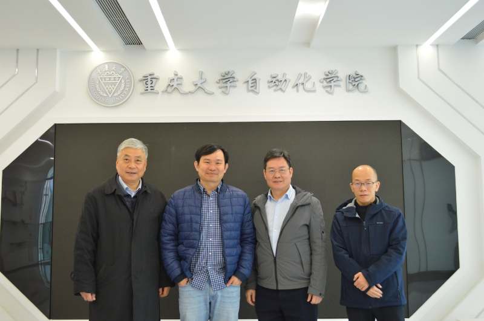

与Raymond Chiong教授合作
合作简介
Raymond Chiong教授先后于英国伯明翰大学和墨尔本大学获得计算机科学硕士及博士学位，随后依次在澳大利亚斯威本科技大学和纽卡斯尔大学工作，现任澳大利亚新英格兰大学科学与技术学院人工智能教授及副院长，并与清华大学和华中科技大学等国内知名院校有丰富的访学、合作经历。他的主要研究方向为机器学习、人工智能、运筹优化和工业智能，并在工业生产、生物和医学等多个领域获得应用。他已出版7篇专著书籍和超260篇学术论文，论文总引用数超9300次，谷歌h因子为50，累计获得科研及产业资助超500万美元。自2022年起，他连续入选由斯坦福大学全球前2%最具影响力科学家榜单，也被评为澳大利亚计算机科学领域顶尖研究者。他目前担任国际知名人工智能顶刊《Computers in Industry》的主编及《IEEE Transactions on Evolutionary Computation》副主编，在人工智能领域具有较高的国际知名度及影响力。
他的主要期刊编辑经历
1. 2024–至今，工业智能应用顶刊《Computers in Industry》主编； 2. 2024–至今，进化计算及人工智能顶刊《IEEE Transactions on Evolutionary Computation》副主编； 3. 2012–至今，人工智能顶刊《Engineering Applications of Artificial Intelligence》编辑； 4. 2015–2019，人工智能顶刊《IEEE Computational Intelligence Magazine》副主编； 5. 2014–2016，国际著名运筹学期刊《European Journal of Operational Research》特邀编辑； 6. 2011–2013，国际著名运筹学期刊《International Journal of Production Economics》特邀编辑； 其中，目前在职主编的《Computers in Industry》为国际著名人工智能及其工业应用顶刊，IF=8.2，为中科院计算机科学方向1区Top；在职副主编的《IEEE Transactions on Evolutionary Computation》为进化计算及人工智能顶刊，IF=11.7，为中科院计算机科学方向1区Top；

Raymond Chiong教授来访合影
合作方向
- 智能网联汽车及
- 工业生产建模及优化
- 进化计算与机器学习
合作意义
此次与本团队达成为期两年的国家外专合作，可为硕士、博士提供丰富的论文指导与出国访学机会。通过这一国际合作项目，我们将促进双方在智能优化领域的学术交流与资源共享，推动前沿技术研究与实际应用的结合，为解决复杂工业优化问题提供更多有效的解决方案。我们期待通过这一国际合作，进一步提升课题组的研究水平和国际影响力。